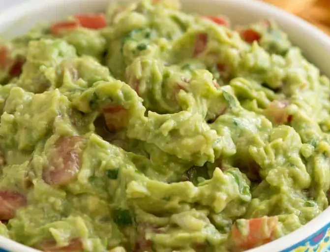

Guacamole

Description
This easy guacamole recipe is quick and simple to make. Great with tortilla chips or as a topping for Mexican foods!
Ingredients
- Avocados
- Onions
- Tomatoes
- Stir in the flour, chocolate chips, and walnuts.
- Drop dough onto a prepared baking sheet.
- Bake until the edges are golden brown.
- Seasonings
- Lime juice
Steps
- Mash avocado in a medium serving bowl. Stir in onion, tomato, and garlic. Season with lime juice, salt, and pepper.
- Cover and chill guacamole for 30 minutes to allow flavors to blend.